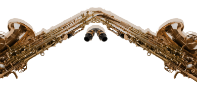
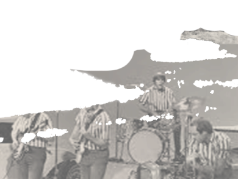
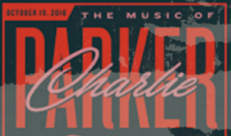
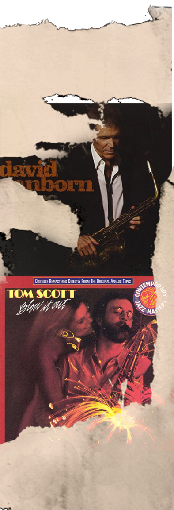
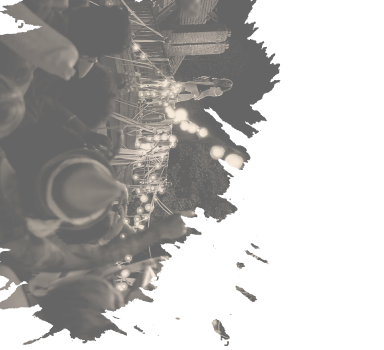
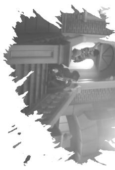
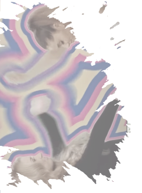

6 November 1814
He also invented the :
Antoine-Joseph "Adolphe" Sax ,
6 November 1814
–
4 February 1894
was a Belgian inventor and musician who invented the saxophone in the
early 1840s,
patenting it in 1846.

saxotromba

saxhorn

saxtube
height of three floors


accidents
Sax faced many brushes with death. As a child, he once fell from
a height of three floors, hit
his head on a stone and was believed dead. At the age of three, he drank
a bowl full of acidic water,
mistaking it for milk, and later swallowed a pin.
He received serious burns from
a gunpowder explosion and once
fell onto a hot cast-iron frying pan, burning his side. Several times he
avoided accidental poisoning and asphyxiation from sleeping in a room
where varnished furniture was drying. Another time young Sax was
struck on the head by a cobblestone and fell into a river, almost dying.
struck on the head by cobblestone


Once upon a time,
every band had a saxophone section. This was before
World War II. Before the men got
drafted, and the big bands fell apart and then became bebop, which
became R&B and
soul and
harlem jump.
So many saxophones were needed that musicians who played other
instruments switched to
the big brass horn, and became
famous on it.


s
In the 1950s, that guy was Plas Johnson, the saxophonist behind the
riffs in some of America’s biggest songs, like
“Pink Panther”
and
“Rockin’ Robin.”
Plas Johnson

That shift toward electronic
production and away from acoustic as exemplified by the fast rise of
disco in the ’70s was notable.
The saxophone thrived in jazz fusion with guys like
Grover Washington Jr., Tom Scott, David Sanborn,
and Michael Brecker. But as the genre became gentrified, there was a definite move away from
saxophone sections and horn sections, to the
sexy saxophone solo.
Kenny G
Of course, no one is more famous in the popular mind for
the saxophone solo
than Kenny G.
He and David Sanborn ushered in a new age of
“smooth jazz,” an early-’80s
genre that put the instrument back in the spotlight.
But Kenny G achieved almost unbelievable popularity
(his 1986 album Duotones hit no. 6 on the Billboard Hot 100)
despite criticism of him that
didn't appreciate his pop style as being distinct from traditional
jazz saxophone playing.
“We start to see this shift toward the emphasis on
dance choreography
and the whole
visual aspect of the performance,”
“As that moves into the
’90s and beyond, that has
become
a huge element of pop.”
Big name ’80s pop stars started using the saxophone to create hooks
that were catchy, but
inescapable and incredibly
annoying. And that use took it from being
a cool instrument with a
strong sound, to being
a weird, almost tacky gimmick.
It wasn’t until the second
decade of the 2000s that the
saxophone peeked back into the Top 40.
There were a couple
of popular songs in the early aughts with big saxes, notably
Jennifer Lopez’s “Get Right”
and
Beyoncé’s “Work it Out.”
It wasn’t until the second
decade of the 2000s that the
saxophone peeked back into the Top 400. There were a couple of popular
songs in the early aughts with big saxes, notably
Jennifer Lopez’s “Get Right” and
Beyoncé’s “Work it Out.”

But what seemed like a
major comeback for the
instrument didn’t come
until 2011
With the releases of Katy Perry’s
“Last Friday Night (T.G.I.F.)”
and
Lady Gaga’s “The Edge of Glory,”
both of which featured distinct saxophone solos.
2014

(Kenny G even made a cameo in the video for “T.G.I.F.”) By 2014, it
seemed like the saxophone was maybe easing into another run as
America’s most popular instrument. That year, it was used in
Jason Derulo’s “Talk Dirty,” Macklemore & Ryan Lewis’s “Thrift
Shop,”
and Redfoo’s “New Thang.”

socials

Also in 2014, there was
Ariana Grande’s “Problem”) featuring Iggy Azalea.
None of these songs had producers in common, or even saxophonists in
common.